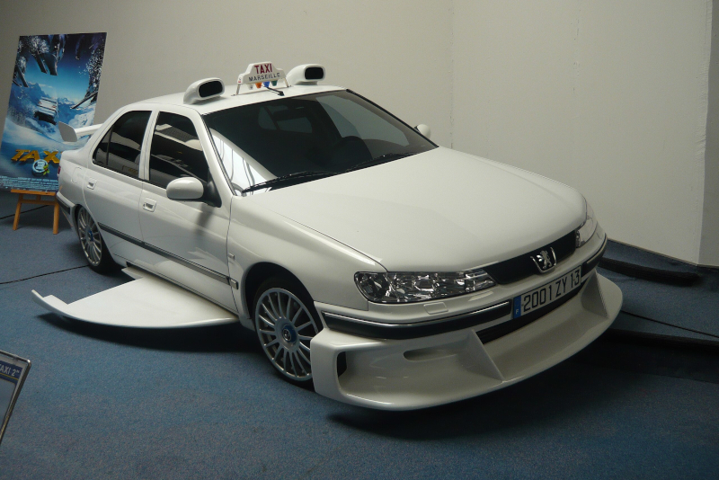
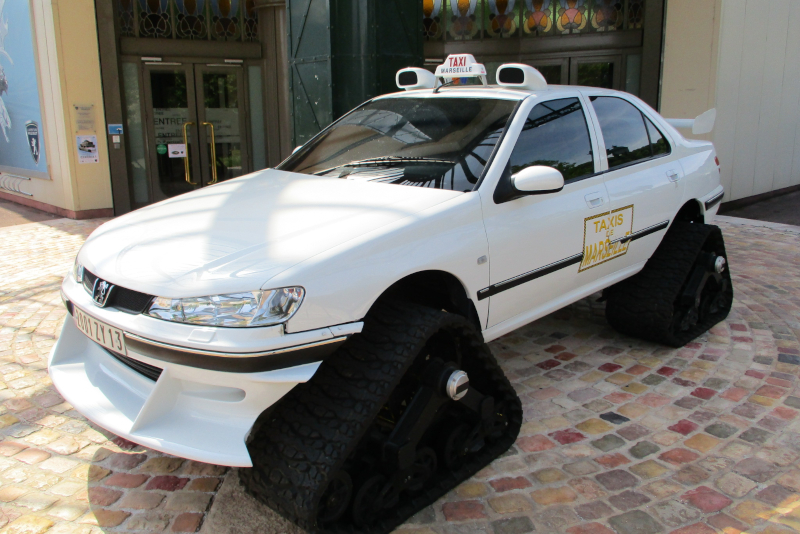
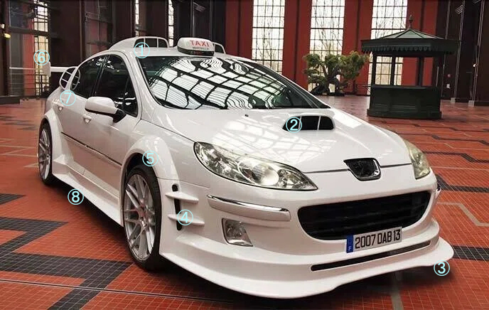

「Taxi」
この映画の名前でもある「TAXi」。それを解説していきます。
※ここから先の内容は、「TAXi」～「TAXi4」までの一部ネタバレが含まれております。
これは「プジョー406」。「猫足」と呼ばれるしなやかな足回りに定評のあるのが特徴で実際にフランスでタクシーとして多く採用されている。
映画の中では１作品目～３作品目まで主人公が使用していた車の原型。フランスのミドルクラスセダンで、2.2Lの直4エンジンを搭載している。
この車が実際に主人公が使用していた車両のように改造された車。普段からこの姿でいるわけではなく、本気を出す際に変形してこのような姿になる。
変形までのプロセスはこんな感じ。
- グローブボックスからコンソールパネルを出し、スイッチを入れる。(2、3ではカセットプレイヤー内に隠されているが内容は同様)
- 車体下部からジャッキが展開し、車体が持ち上がる。
- タイヤがフェンダー端ギリギリまでせり出し、トレッドが広がる。
- エアロパーツが車体下部から展開。同時にリアウイングがトランク蓋からせり出す。
- ハンドルを純正のものからスポーツ仕様のものに付け替え、ジャッキが折りたたまれて車体が接地し、変形完了。
この変形がシリーズを重ねるごとにハイテク化していき、2作目では飛行ウィングで空を飛び(下左画像)、3作目は雪上走行用のキャタピラを搭載している。(下右画像)
 この車がTAXi4で主人公が乗っていた物。前作③まで乗っていた406ではなく407にモデルチェンジ。
|  | 番号 | 改造点 |
|---|---|---|
| ① | ラリーカー風のルーフダクト | |
| ② | ポップアップで出現、ボンネットダクト | |
| ③ | レーシーなフロントスポイラー | |
| ④ | ブレーキを冷却するエアーダクト | |
| ⑤ | 新兵器ワイドフェンダー | |
| ⑥ | インパクト抜群のＧＴウイング | |
| ⑦ | リアサイドにもダクトを装備 | |
| ⑧ | スタイリッシュなサイドスカート |
この画像では分からないがエキゾーストも改造しており、快音が響き渡る。
前述のように今作からモデルチェンジしていて、制作サイドの熱意がものすごく、
前作「TAXi3」の4タイプにとどまった型数を大幅に上回り、12タイプ製作しているほどである。
エクステリアの改造も大幅に変更、多数のエアインテークを設けたほか、本物のレース仕様のパーツを多数採用している。
- 最高速度は312.8km/h（本作中での明示的な最高速度）に達する。
- 停止した状態から自由自在に方向転換できる装置を装備している。
- ボンネットエアインテークを新規に装備している。
- ルーフベンチレーターを装備。
- ホイール周りは前後ともワイドフェンダー化。ホイールは変形スポークタイプ。サイズは8×18。
- タイヤはBFグッドリッチ製225/40。
- Cピラーにもエアインテークを装備。しかしこれは本来はミッドシップあるいはリアエンジンの冷却のためのもの。
- ナンバープレートは"2007DAB13"。"2007"は映画の公開年、"13"はマルセイユの所属県ブーシュ＝デュ＝ローヌ県の県番号